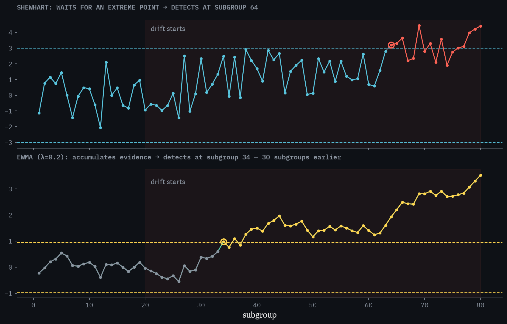
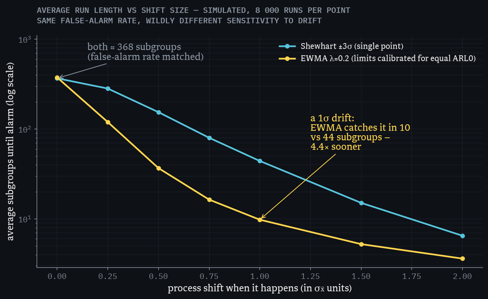

Level 9 · chapter nine
Detection theory: memory beats points
A chart with a memory catches drift while every raw point still looks innocent.
A cutting tool starts to wear at hour 21, and parts grow a little bigger every hour. Chart A judges each hour on its own. Chart B keeps a running score of recent hours. Both raise false alarms equally rarely. How much sooner does B sound the alarm?
after Level 8 — capability·leads to Level 10 — counting, not measuring
- 9.1The most expensive failure modeactevery single measurement of a drift looks acceptable
- 9.2A chart with no memory43 subgroups late, and 2.6 sigma of movement
- 9.3A statistic that remembersactone part new, four parts memory, same alarm budget
- 9.4The same eighty subgroups againinteractivecaught at 34, with the mean only 0.8 sigma off
- 9.5One drift is an anecdote44 subgroups against 10, and what the trade means
The most expensive failure mode
A slow drift is the costliest problem a machine can have, because each part on its own still looks fine. Here a standard chart watches the average start to creep, and says nothing.
Slow drift is the most expensive failure mode in manufacturing, because every single measurement of it looks acceptable. the setupfalse alarm budget1 in 370drift rate0.06 σ / subgroupHere is a Shewhart chart with limits at ±3σ, which buys one false alarm in 370 subgroups.
The first twenty subgroups are noise around the target. Then the mean starts walking at 0.06 sigma per subgroup — slow enough that no single measurement looks wrong, and the chart carries on saying nothing.
A chart with no memory
The standard chart judges each point alone and then forgets it, so it raises the alarm long after the drift began. Every part made in between came from a changed process.
The first violation lands at subgroup 64. what it costdrift startsafter subgroup 20first alarmsubgroup 64mean moved by then2.6 σThat is 44 subgroups after the drift began, by which time the mean has moved 2.6 sigma and every part in between was made by a process nobody knew had changed.
Each point was judged on its own and then forgotten. spoken · 1:12“Each point was judged on its own and then forgotten. That is the whole weakness.”That is the whole weakness, and it is not a tuning problem: the chart has no memory.
A statistic that remembers
This chart keeps a running score: each new result counts for a fifth, and the past keeps the rest. Its limits are set so it gives false alarms no more often than the first chart.
The running score counts the newest hour for 20 % and the past for the rest. How much does the hour from 10 hours ago still count?
Same process, same data, same false-alarm budget — and a statistic that remembers. how much it keepslambda0.20weighting1 new : 4 memoryEach new subgroup gets a fifth of the weight and the running statistic keeps the rest: with lambda at 0.2 that is one part new and four parts memory. Written out, with the newest subgroup mean and the running statistic, , started at the target.
Its limits are not ±3. They are calibrated by simulation until this chart cries wolf exactly as rarely as the last one — one alarm in 370 quiet subgroups against 370, so the comparison that follows is fair.
The same eighty subgroups again
On the same eighty results, random ups and downs cancel out in the running score but the drift keeps adding up. It sounds the alarm far sooner, on a point the standard chart would ignore.
While the process is quiet the statistic wanders near zero, because new noise keeps cancelling old noise. caught earlycrosses atsubgroup 34mean off by0.8 σraw point there+2.48 σOnce the drift starts the noise still cancels but the drift does not: it is the same direction every time, so it adds up.
It crosses the limit at subgroup 34, with the mean only 0.8 sigma off and the raw measurement sitting at +2.48 sigma — a number no Shewhart chart would look at twice. The other chart waited until subgroup 64, thirty subgroups later.


- EWMA alarms at subgroup
- —
- Shewhart alarms at subgroup
- —
- EWMA limit, ±
- —
The same eighty subgroups as the act: quiet until subgroup 20, then a slow drift. Grey points are raw, against ±3σ; blue is the EWMA. For every λ its limits are calibrated by simulation so that it cries wolf once in 370 quiet subgroups, exactly as often as the raw chart, so the race stays fair. A small λ remembers more, which is what a slow drift needs; at λ = 1 the EWMA is the raw chart.
One drift is an anecdote
One run could be luck, so test thousands of sudden jumps. The chart with a memory catches them several times sooner, with no extra false alarms.
That is one drift. thousands of 1σ stepsShewhart ARL44EWMA ARL10speed-up4.4×The standard yardstick swaps the slow walk for a sudden step: the mean jumps by one sigma and stays there. Run thousands of those and the average wait comes out at 44 subgroups for the Shewhart rule and 10 for this one. Divide them: 4.4 times sooner, bought with no extra false alarms at all. The 44 matching the drift above is a coincidence; that run gave 44 against 14.
That trade — sensitivity bought without paying in false alarms — is the whole of detection theory.spoken · 3:41“4.4 times sooner, bought with no extra false alarms at all.”

